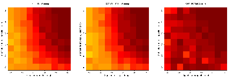

Shrinkage Discriminant Analysis and CAT Score Variable Selection

sda page on CRAN.
This package provides an efficient framework for high-dimensional linear and diagonal discriminant analysis with variable selection. The classifier is trained using James-Stein-type shrinkage estimators and predictor variables are ranked using correlation-adjusted t-scores (CAT scores). Variable selection error is controlled using false non-discovery rates or higher criticism.
Current Version: 1.3.4
Authors: Miika Ahdesmäki, Verena Zuber, Sebastian Gibb, and Korbinian Strimmer.
Documentation and Installation:
Quick install:
enter at the R console: install.packages("sda")
enter at the R console: install.packages("sda")
- Manual (pdf file) and release history.
- Download of sda version 1.3.4 source package.
- Archive of previous versions of sda.
- Licensed under the GNU GPL version 3 (or any later version).
Additional Material:
- Example R script for analyzing Khan et al. (2001) data.
- Example R script for feature selection using Singh et al. (2002) data.
- R code for comparison of CAT score based variable selection with the leekasso.
See the discussion at the simply statistics blog and the results using the sda package (click on image to enlarge):
.
{kind=link}
Relevant Publication:
- Ahdesmäki, M., and K. Strimmer. 2010. Feature selection in omics prediction problems using cat scores and false non-discovery rate control. Ann. Appl. Stat. 4: 503-519. ( arXiv:0903.2003)
- Zuber, V., and K. Strimmer. 2009. Gene ranking and biomarker discovery under correlation. Bioinformatics 25: 2700-2707. ( arXiv:0902.0751)
Misc:
- A related variable ranking approach for models with continuous response using CAR scores is implemented in the care package.
- In Allen and Tibshirani (2012) there is an extensive comparison of CAT scores with related statistics (Table 2).
Back to software page.